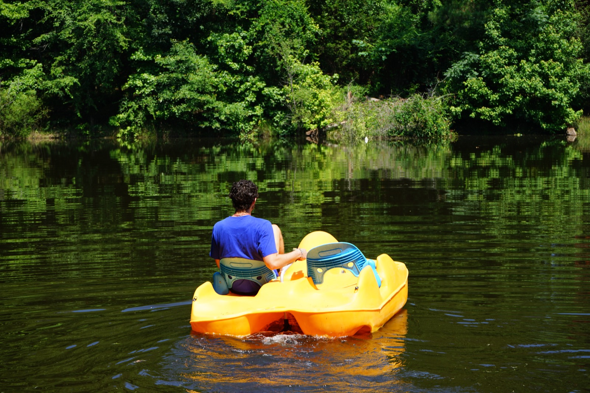

Designed for Camps That Care About Long-Term Health
This work serves directors and boards who want clarity, alignment, and sustainable culture—not quick fixes.
This work serves directors and boards who want clarity, alignment, and sustainable culture—not quick fixes.
Our camp consulting framework adapts to your mission while strengthening leadership systems that sustain culture long-term.

Healthy camps require both heart and clarity.
You may benefit from this work if:
This work supports directors who want:
You don't need more activity. You need alignment. The Healthy Camp Operating Model™ provides it.
Strong governance protects mission.
This work helps boards that:
Boards are most effective when:
These five outcomes map directly to the four layers of the Healthy Camp Operating Model™ — Structure, Translation, Formation, and Protection.
Healthy governance strengthens healthy camps.
Christian camps carry a unique responsibility to protect spiritual integrity while leading with operational excellence.
We partner with Christian camp directors and boards seeking sustainable leadership alignment rooted in mission clarity.
Learn more about our Christian Camp ConsultingMission-driven camps deserve mission-aligned leadership systems.
The Value-Driven Management System provides structured clarity without unnecessary complexity.
This work also serves:
If your camp values:
Healthy systems serve every camp that commits to the work.
This is important for filtering.
You want quick fixes without structural change
You are unwilling to examine governance clarity
You prefer informal leadership without measurable accountability
You are satisfied with recurring issues
Healthy systems require intentional effort.
If you are responsible for the long-term health of a camp—whether as a Director or Board Member—and want clarity, alignment, and sustainable culture, start with a conversation.
Schedule a ConversationNo obligation. Just clarity.